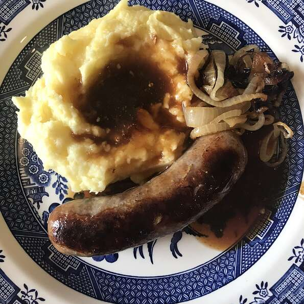

Bangers and Mash

Description
A next level British dish to cheer up any stormy day. This dish contains 4 servings.
Ingredients
- 4 large baking potatoes
- 1 teaspoon of butter
- A quarter cup milk, or as needed
- Salt and Pepper
- Pack of 8 Sausages
- Gravy mix as needed
- Half a cup of water
- 1 teaspoon of oil
Steps
- Peel and quarter potatoes
- Place potatoes into cooking pot with enough water to cover, bring to a boil and cook until tender. This should take ruffly 20 minutes.
- Whilst the potatoes are boiling place you sausages into a pan with a little oil on a medium to high heat and cook until heated fully through.
- Drain the potatoes then mash with 1 teaspoon of butter and enough milk to reach your desired complexion. Do this until you get a nice fluffly texture.
- Mix gravy granules with boiling water
- Serve the mash and sausages evenly between four dishes add salt and pepper and gravy if desired.